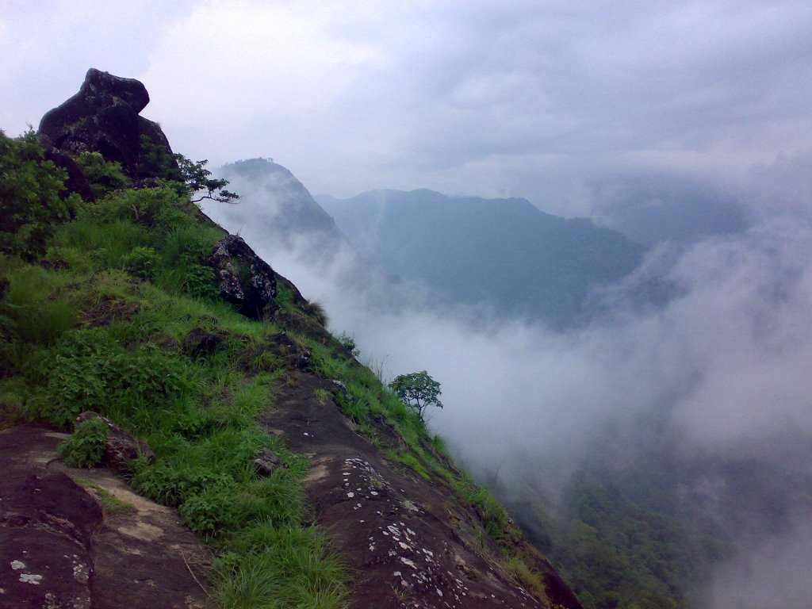

Kulamavu
If you're a hiking or trekking junkie, Kulamavu is a hill-station that offers the perfect terrain for an adrenaline kick. With some amazing trekking trails, the place is also adorned with equally enchanting surroundings.

Idukki Arch Dam
Built across the Kuravan and Kurathi hills at a height of about 550 feet, the Idukki Arch Dam is an architectural genius, for the rugged terrain along which it is built. The natural beauty surrounding the dam is breath-taking.

Periyar National Park
Famous for its Tiger reserves and thick vegetation, the Periyar National Park is a perfect place for nature buffs and wildlife lovers. However, the best way to explore this natural habitat is by safaris either on jeep or elephants.